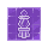

Soul Receiver
| Soul Receiver | |
|---|---|
Basic information
| |
Required Technology :
|
Healer Enthusiast |
Related pages :
|
Spiritualism (Tech Tree) |
Building Information
| |
Horizontal x Vertical :
|
2x2 |
Rotatable :
|
False |
Location(s)
| |
| Souls room | |

The Soul Receiver is a workstation that can be built in all locations that allows for remote crafting from the map at the cost of gratitude points.
Current locations include:
- Quarry
- Refugee camp (Game of Crone DLC)
- Old Graveyard
- Morgue
- Sweet Home
- Kitchen Garden
- Vineyard
- Talking Skull (Stranger Sins DLC)
A total of 12 Soul Receivers can be built to fill the map.
Cost
| Icon | Materials Required | Energy | Notes |
|---|---|---|---|
 |
3× Simple iron parts 1× Conical flasks 1× Wooden plank |
Requires Tech: |

| ||||||||